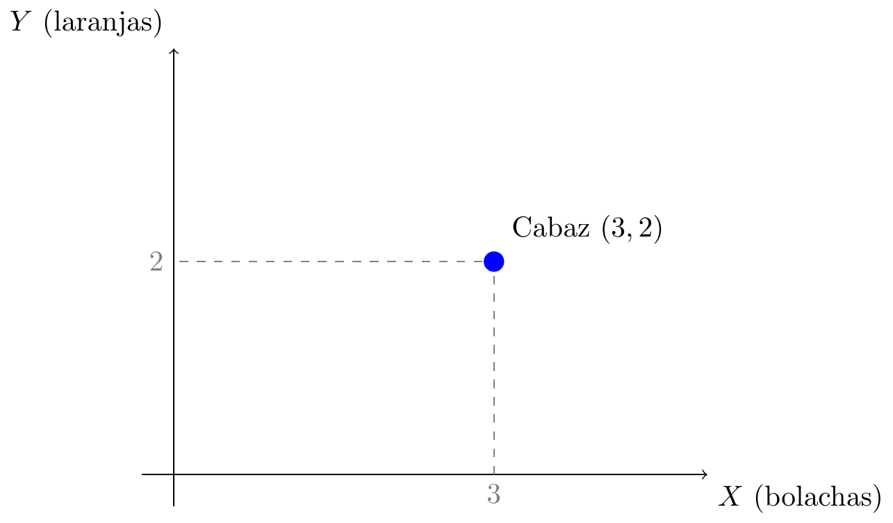
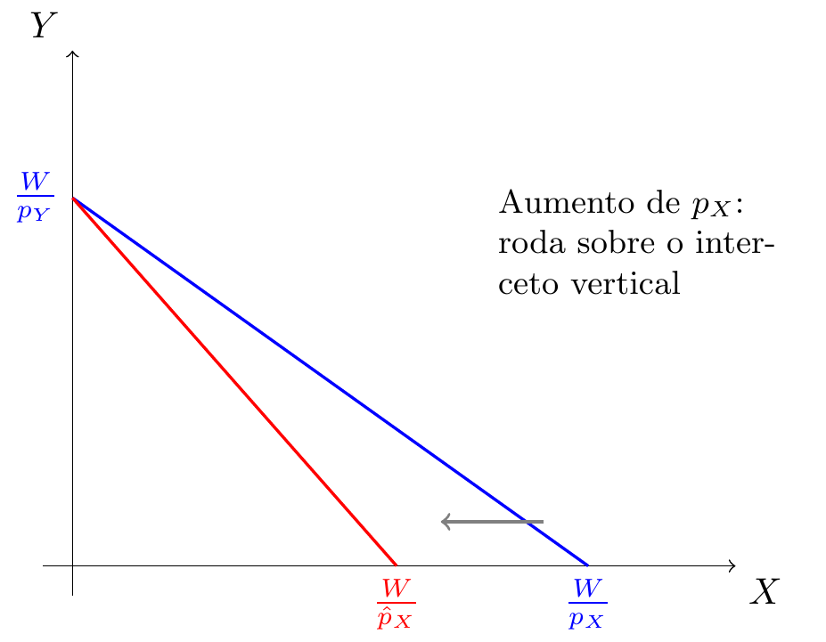
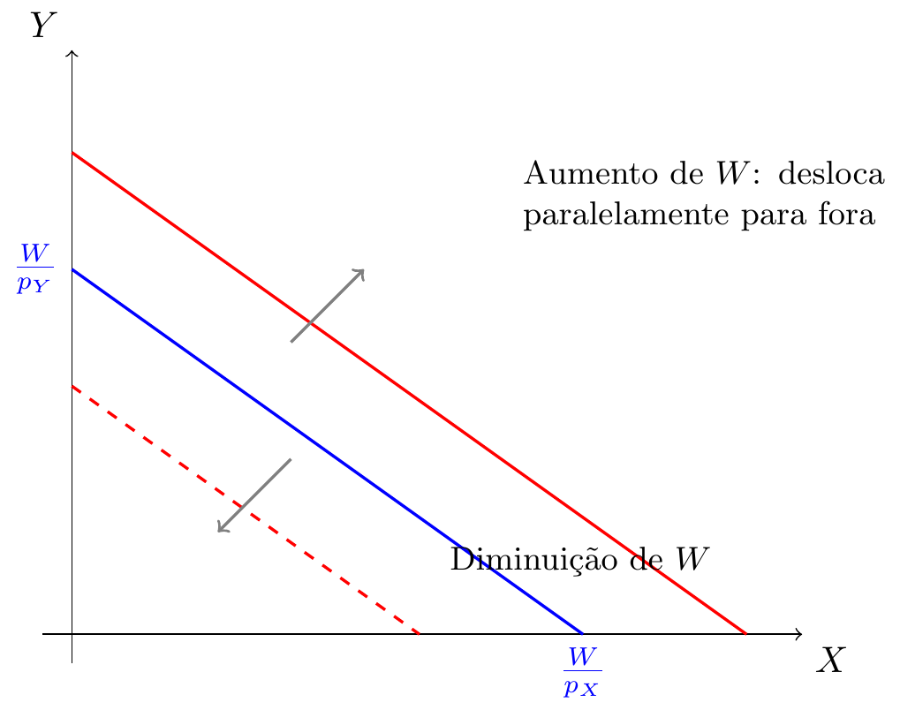

Microeconomia
Cabaz, Espaço e Restrição Orçamental
1 Do Produtor ao Consumidor
Nas aulas anteriores estudámos a Fronteira das Possibilidades de Produção e os ganhos do comércio. Agora entramos no estudo do consumidor.
O esquema geral do modelo micro começa pelo lado da procura:
- Consumidores → Restrição Orçamental → Preferências → Utilidade → Escolha → Procura
2 Cabaz de Bens
Um cabaz de bens é composto por quantidades de vários bens. Quando comparamos cabazes, os bens são os mesmos, mas as quantidades variam.
. . .
Admitamos dois bens: laranjas (\(Y\)) e bolachas (\(X\)).
O cabaz \((3, 2)\) é composto por 3 bolachas e 2 laranjas. Graficamente, é um ponto no espaço \((X, Y)\).
3 Representação Gráfica de um Cabaz
Cada cabaz é um ponto no plano. O eixo horizontal mede a quantidade de \(X\), o vertical mede a quantidade de \(Y\).
4 O Problema do Consumidor
De entre todos os cabazes possíveis, o consumidor quer encontrar a escolha ótima, dadas as variáveis exógenas (que não controla):
- Orçamento (\(W\))
- Preços de mercado (\(p_X\), \(p_Y\))
. . .
O consumidor decide as variáveis endógenas: as quantidades \(X\) e \(Y\) que vai consumir.
5 Espaço das Possibilidades de Consumo
É o conjunto de todos os cabazes que podem ser adquiridos com um dado orçamento.
. . .
Um cabaz \((X, Y)\) é acessível se a despesa total não exceder o orçamento:
\[X \cdot p_X + Y \cdot p_Y \leq W\]
. . .
O conjunto de cabazes cuja despesa esgota exatamente o orçamento designa-se Restrição Orçamental.
6 Restrição Orçamental
A restrição orçamental é dada por:
\[X \cdot p_X + Y \cdot p_Y = W\]
. . .
Exemplo: €10 para gastar em bolachas e laranjas. Cada bolacha custa €0,25 e cada laranja custa €0,10.
\[0{,}25 X + 0{,}10 Y = 10\]
7 Representação Gráfica

O triângulo azul claro é o espaço orçamental: todos os cabazes acessíveis. A linha azul é a restrição orçamental.
8 Interpretação dos Intercetos
Se o consumidor gastar todo o orçamento num só bem:
Apenas bolachas: \(X = \frac{W}{p_X} = \frac{10}{0{,}25} = 40\)
Apenas laranjas: \(Y = \frac{W}{p_Y} = \frac{10}{0{,}10} = 100\)
. . .
Note
Os intercetos mostram a quantidade máxima de cada bem que o consumidor pode comprar se não consumir nada do outro.
9 Forma Explícita da Restrição Orçamental
Podemos reescrever a restrição orçamental isolando \(Y\):
\[X p_X + Y p_Y = W \quad \Leftrightarrow \quad Y = {\color{red}\frac{W}{p_Y}} - {\color{blue}\frac{p_X}{p_Y}} X\]
. . .
\({\color{red}\frac{W}{p_Y}}\): ordenada na origem (interceto vertical)
\({\color{blue}-\frac{p_X}{p_Y}}\): declive da restrição orçamental
. . .
No exemplo: \(Y = {\color{red}100} - {\color{blue}2{,}5}\, X\)
10 Significado Económico do Declive
O declive da restrição orçamental é \(-\frac{p_X}{p_Y}\).
Em valor absoluto: \(\frac{p_X}{p_Y}\) é o preço relativo do bem \(X\) em termos do bem \(Y\).
. . .
No exemplo: \(\frac{0{,}25}{0{,}10} = 2{,}5\)
Significa que cada bolacha “custa” 2,5 laranjas — para comprar mais uma bolacha, o consumidor prescinde de 2,5 laranjas.
. . .
É um custo de oportunidade, tal como na FPP!
11 Alterações na Restrição Orçamental
O que acontece quando mudam os preços ou o orçamento?
Vamos analisar três casos:
- Aumento do preço de \(X\)
- Diminuição do preço de \(Y\)
- Alteração do orçamento \(W\)
12 Caso 1: Aumento do Preço de \(X\)

O interceto vertical não muda (não depende de \(p_X\)). O interceto horizontal diminui. A reta roda para dentro.
13 Caso 2: Diminuição do Preço de \(Y\)

O interceto horizontal não muda (não depende de \(p_Y\)). O interceto vertical aumenta. A reta roda para fora.
14 Caso 3: Alteração do Orçamento

O declive \(\frac{p_X}{p_Y}\) não muda. A reta desloca-se paralelamente.
15 Resumo das Alterações
| Variação | Interceto Vertical | Interceto Horizontal | Declive |
|---|---|---|---|
| \(p_X \uparrow\) | Não muda | \(\downarrow\) | Muda |
| \(p_Y \downarrow\) | \(\uparrow\) | Não muda | Muda |
| \(W \uparrow\) | \(\uparrow\) | \(\uparrow\) | Não muda |
. . .
Regra prática: se muda um preço, a reta roda; se muda o orçamento, a reta desloca-se paralelamente.
16 Impostos Lump-Sum
Um imposto lump-sum é um montante fixo que o consumidor tem de pagar, independentemente do que consome.
. . .
Se o imposto é \(T\), o orçamento disponível passa a ser:
\[W' = W - T\]
. . .
A restrição orçamental com imposto:
\[X p_X + Y p_Y = W - T\]
O efeito é idêntico a uma redução do orçamento: deslocação paralela para dentro.
17 Subsídios Lump-Sum
Um subsídio lump-sum é um montante fixo que o consumidor recebe, independentemente do que consome.
. . .
Se o subsídio é \(S\), o orçamento disponível passa a ser:
\[W' = W + S\]
. . .
A restrição orçamental com subsídio:
\[X p_X + Y p_Y = W + S\]
Efeito: deslocação paralela para fora.
18 Efeito Gráfico de Imposto e Subsídio Lump-Sum

O declive não muda em nenhum dos casos — os preços relativos mantêm-se iguais.
19 Analogia: FPP vs Restrição Orçamental
| FPP | Restrição Orçamental | |
|---|---|---|
| Eixos | Quantidades produzidas | Quantidades consumidas |
| Linha | Produção máxima | Despesa = Orçamento |
| Declive | Custo relativo de produção | Preço relativo (\(p_X/p_Y\)) |
| Interior | Ineficiente | Não gasta todo o W |
. . .
A FPP limita o que se pode produzir; a restrição orçamental limita o que se pode consumir.
20 Exemplo Numérico
Um consumidor tem um orçamento de €120. O preço de um livro é €20 e o preço de uma refeição é €15.
. . .
A restrição orçamental é:
\[20X + 15Y = 120\]
. . .
Em forma explícita:
\[Y = 8 - \frac{4}{3}X\]
. . .
Intercetos: \(X_{max} = 6\) livros; \(Y_{max} = 8\) refeições. Declive: \(-\frac{4}{3}\) (cada livro “custa” \(\frac{4}{3} \approx 1{,}33\) refeições).
21 Exemplo: Representação Gráfica

22 Resumo da Aula 4
- Cabaz de bens: ponto no espaço \((X, Y)\) com quantidades de cada bem
- Espaço orçamental: conjunto de cabazes acessíveis (\(X p_X + Y p_Y \leq W\))
- Restrição orçamental: \(X p_X + Y p_Y = W\) — a fronteira do espaço
- Declive: \(-\frac{p_X}{p_Y}\) — preço relativo (custo de oportunidade)
- Variações de preços rodam a reta; variações de orçamento deslocam-na
- Impostos/subsídios lump-sum equivalem a alterar \(W\)
23 Questão de Escolha Múltipla 1
Um consumidor tem um orçamento de €200. O preço do bem \(X\) é €10 e o preço do bem \(Y\) é €5. Qual é o declive da restrição orçamental (em valor absoluto)?
- 0,5
- 2
- 10
- 20
. . .
Resposta: b) O declive em valor absoluto é \(\frac{p_X}{p_Y} = \frac{10}{5} = 2\).
24 Questão de Escolha Múltipla 2
Se o preço do bem \(X\) diminui, o que acontece à restrição orçamental?
- Desloca-se paralelamente para fora
- Roda sobre o interceto horizontal, expandindo-se
- Roda sobre o interceto vertical, expandindo-se
- Desloca-se paralelamente para dentro
. . .
Resposta: c) Quando \(p_X\) diminui, o interceto vertical \(\frac{W}{p_Y}\) não muda, mas o interceto horizontal \(\frac{W}{p_X}\) aumenta. A reta roda sobre o ponto do eixo \(Y\).
25 Exercício
Um consumidor dispõe de €60 para gastar em dois bens. O preço de \(X\) é €3 e o preço de \(Y\) é €2.
- Escreva a restrição orçamental.
- Calcule os intercetos.
- Se o governo aplica um imposto lump-sum de €12, qual é a nova restrição orçamental?
. . .
Resolução:
- \(3X + 2Y = 60\)
- \(X_{max} = 20\); \(Y_{max} = 30\)
- \(3X + 2Y = 48\) → \(X_{max} = 16\); \(Y_{max} = 24\). O declive mantém-se: \(-\frac{3}{2}\).
Próxima aula: Preferências, Axiomas de Racionalidade